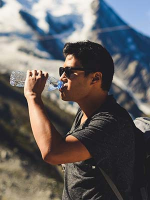

Audience
24/7 Weather is the one stop place for all your weather needs in and around Salt Lake City, Utah. Visit 27/7 Weather anytime day or night for the most up to date forecasts. More than just weather forecasts, we keep you up to date on major weather events across the world.
- Who: This website is targeted to local community members wanting the most accurate and up to date weather forecast for the Salt Lake City Area.
- Age: 14 to 100
- Technology: Will most often access the site on a mobile device.
- Income: $0 - $150K+
- Motivation: Our audience will need the most accurate forecasts as they plan for hiking trips, Ski Trips, and family outings.
Personas
John Doe |
Jane Smith |
|  |
|
- Occupation: Graphic Designer
- Demographics and Education: 24 Years old, Bachelors Degree in Graphic Design
- Goals and motivation for using the site: Joe is an avid hiker and regularly checks the weather to plan out his hikes for the week.
- Social: Joe posts 2-3 times on social media each week with photos and tips about his hikes.
- Technology: Anytime he is not working, Joe is on the go. He accesses the site from a desktop when planing his week, then uses his mobile phone to check for any changes throughout the week.
- Quote: "The outdoors are my home!"
|
- Occupation: Sales Representative
- Demographics and Education: 28 years old, Associates Degree in Literature
- Goals and motivation for using the site: Jane spend her free time out with her friends, shopping, barbecuing, and sometimes just walking the town. They often plan things last minute so it is important that she has access to the most accurate same day forecasts to plan het outings.
- Social: Jane posts on social at least once a day, sharing photos of her out with her friends and sharing her writing.
- Technology: Jane almost exclusively uses her mobile phone and rarely access the site on a desktop.
- Quote: "The most important thinks in live to me are my friends and my writing, without one I would be nothing."
|
Scenarios
- Will it rain during my hike tonight?
- Will there be snow this weekend for skiing?
- Will it rain during my BBQ this weekend?
- What will the weather be like tomorrow for my photo shoot?
- What major weather events have happened around the world recently?